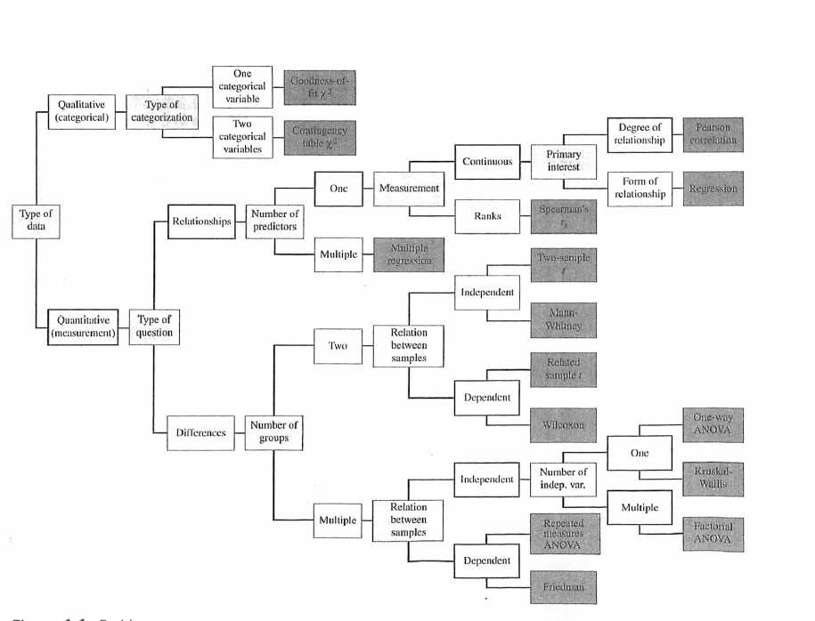

مقدمه
کتاب روشهای آماری برای روانشناسی (Statistical Methods for Psychology) اثر دوید هال (David C. Howell) از انتشاراتی وادزوورس (Wadsworth Publishing) منبع اصلی این کتاب است که برای دانستن و توضیحات بیشتر میتوانید به آن مراجعه فرمایید (Howell 2012).
شما میتوانید نسخه الکترونیکی کتاب روشهای آماری برای روانشناسی ویرایش هفتم را از اینجا دانلود نمایید.
مجموع دادههای کتاب را میتوانید از اینجا دانلود نمایید.
برای دسترسی به اطلاعات جانبی دیگر میتوانید به اینجا مراجعه فرمائید.

شکل 0.1: درخت کلی از مطالب آماری ارائه شده در کتاب
منابع
Howell, David C. 2012. Statistical Methods for Psychology. Cengage Learning.